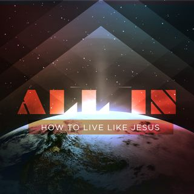

Welcome To My Website
Humility
-He must increase, I must decrease! By humility and the fear of the Lord are riches, and honor, and life. The fear of the Lord is the instruction of wisdom; and before honor is humility. Before destruction the heart of man is haughty, and before honor is humility. Likewise, ye younger, submit yourselves to the elder. Yea, all of you be subject one to another, and be clothed with humility: for God resists the proud but gives grace to the humble. Humble yourselves therefore under the mighty hand of God, that he may exalt you in due time. For thus saith the high and lofty One that inhabiteth eternity, whose name is Holy; I dwell in the high and holy place, with him also that is of a contrite and humble spirit, to revive the spirit of the humble, and to revive the heart of the contrite ones. Humility is going low, thinking of Christ more and abasing self to let Christ exalt us. It's not thinking low of self in terms of esteem, but it is the proper perspective of our place in Christ.Hunger
-The process of spiritual hunger is individually unique but it is summed up in one way: the more we eat of Christ the hungrier we get until we are consumed with Him and by Him. Jesus said unto them, I am the bread of life: he that cometh to me shall never hunger; and he that believeth on me shall never thirst. Blessed are they which do hunger and thirst after righteousness: for they shall be filled. We are salt and light and our spiritual salt should make us thirsty for Christ's thirst quenching satisfaction.Obedience
-All of creation obey's the voice of God except humanity. We have a daily choice to make to bring into captivity every thought to the obedience of Christ. Know ye not, that to whom ye yield yourselves servants to obey, his servants ye are to whom ye obey; whether of sin unto death, or of obedience unto righteousness? It is better to obey than any other form of activity or duty that we could do. Take all of His word and put it into action.Pure Belief
-Childlike faith is pure faith, it is Centurion type of faith, it is woman with the issue of blood type of faith and it is simple trust and reliance upon the trustworthy word of God. It's the kind of faith Mary had when she said: Behold the handmaid of the Lord; be it unto me according to thy word. When talking about child-like faith Jesus said: Whosoever shall not receive the kingdom of God as a little child, he shall not enter therein. He also said: Whosoever therefore shall humble himself as this little child, the same is the greatest in the kingdom of heaven.Prayer
-Is powerful. Pray without ceasing. Pray every where, lifting up holy hands, without wrath and doubting. The effectual fervent prayer of a righteous man avails much. Pray one for another, that ye may be healed. The Spirit also helps our infirmities: for we know not what to pray for as we ought: but the Spirit itself makes intercession for us with groanings which cannot be uttered. On the day of Pentecost we saw the power that Christ wanted to release to His body and the results that followed. And when the day of Pentecost was fully come, there came a sound from heaven as of a rushing mighty wind, and it filled all the house where they were sitting. And there appeared unto them cloven tongues like as of fire, and it sat upon each of them. And they were all filled with the Holy Ghost, and began to speak with other tongues, as the Spirit gave them utterance.From the day of Pentecost to Irenaus(AD125-200) and Origen(AD185-284) to Augustine(AD354-430) to the Montanist and Monasticism to Francis of Assis(AD1181-1226) through the Reformation and onto the Anabaptist's and Quakers(AD1650) to the revival among the Methodists and all through the Great Awakenings to the Welsh Revival and Azusa Street to the Holiness and Healing revivals of the 40's and 50's to the Charismatic revivals of the 60's and 70's all the way until today, the power of God and the scarlet thread of the blood of Jesus is clearly seen. The day of Pentecost was the former rain and in these last days we stand with our mouths open wide as for the latter rain. This is power for purpose! As on the day of Pentecost a 3,000 soul harvest came in, the fields now are ripe for harvest. Through the mocking and confusion Peter stood up and said, These are not drunken, as ye suppose, seeing it is but the third hour of the day. But this is that which was spoken by the prophet Joel; And it shall come to pass in the last days, saith God, I will pour out of my Spirit upon all flesh: and your sons and your daughters shall prophesy, and your young men shall see visions, and your old men shall dream dreams; and on my servants and on my handmaidens I will pour out in those days of my Spirit; and they shall prophesy. While we get distracted and focused on entertainment, idolatry, comfort or the latest thing happening, the Lord is patiently waiting for the harvest. It's never to late to turn and burn with a passionate fire, establish your heart for the coming of the Lord draws near. Let us return unto the Lord: He will heal us and bind us up. After two days He will revive us: in the third day He will raise us up, and we shall live in His sight. Then shall we know, if we follow on to know the Lord: His going forth is prepared as the morning and He shall come unto us as the rain, as the latter and former rain unto the earth.
Christ is declared to be the Son of God with power, according to the spirit of holiness, by the resurrection from the dead. Resurrection power is not just for those already in the tomb, resurrection power works in the saints while we are still alive. Isaac laid on the altar, Abraham raised the knife but not one cut or slice was ever made. David saw many spears, he had many wilderness encounters with Saul and his troops but they never touched him. The lion, the bear, Goliath's sword and spear to Saul's hunting him down, none of it touched David's life physically. It's the fellowship of His sufferings. He took the nails, He took the biting wood on His already broken and bleeding back, He took the death march while already draining blood and He laid down His life as a propitiation that we might live in and through Him. Glorified bodies await us in glory but while we wait we like Paul, always bear about in the body the dying of the Lord Jesus, that the life also of Jesus might be made manifest in our body. Trials, troubles, persecution, affliction and tribulation increases resurrection power in our lives. Not that we hope or wish for them to occur but we can have the proper perspective through them. Without the furnace there's no 4th man in the fire. Suffering and loss is to win Christ and be found in Him, not having my own righteousness but the righteousness which is of God by faith: that I may know Him, and the power of His resurrection, and the fellowship of His sufferings, being made conformable to His death. When asking about the thorn in his flesh the Lord said to Paul: My grace is sufficient for thee: for my strength is made perfect in weakness. Paul then said: Most gladly therefore will I rather glory in my infirmities, that the power of Christ may rest upon me. Therefore I take pleasure in infirmities, in reproaches, in necessities, in persecutions, in distresses for Christ's sake: for when I am weak, then am I strong. As partakers of the sufferings and we are also made partakers of His life and consolation. Resurrection power!
Christ is the fullness that fills all in all. When all things are subdued in Christ, the Son will also be in subjection to Him that put all things under Him, that God may be all in all. The 1st step to living like Christ is to follow Him! Astonished at the boat sinking load of fish, Peter fell down at Jesus' knees, saying, Depart from me; for I am a sinful man, O Lord. Jesus said unto Simon, Fear not; from henceforth thou shalt catch men. And when they had brought their ships to land, they forsoke all, and followed Him. When Jesus made the call, the disciples rose up and followed Him without delay. On the other hand a few people showed up to Jesus saying they would follow but when they heard the price of discipleship they changed their minds. A rich ruler asked about eternal life, he even professed to keep the law from his youth up but in the end he went away very sorrowful because Christ asked him to give up the one thing that held him up from following fully. Sell all that you have and give the money to the poor, you will have treasure in heaven: and come, follow me was the final instruction but he could not do it. Being all in is not focusing on anothers walk of faith because going all in is simply to just follow Him, fully focused on Him. We can follow others as they follow Christ as long as they help us to follow after Christ to a greater capacity. The way to walk with the Lord is clear, If any many will come after me, let him deny himself, and take up his cross daily, and follow me. Instead of self-gratificaiton, daily denial. The only reason to take up a cross is for a crucifixion. Jesus had not yet gone to the cross of Calvary but these words still painted a vivid picture in the mind of the hears of pain, torture, blood, suffering and death. If you were scheduled to a cross for the day it was not a good day, it was your last day and the end was to be a day of agony followed by your departure. All In is being in the world but not of the world. All In is on fire for Jesus every day! All In is obedience to the word written in your heart. All In is a passionate pursuit of the One who is already passionately pursuing you. Go All In!
